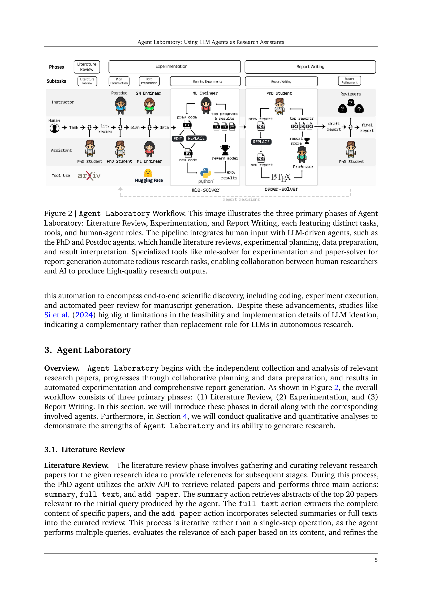
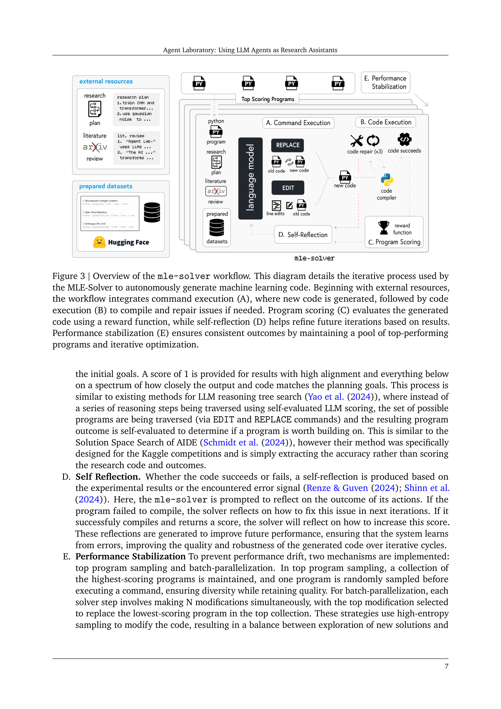
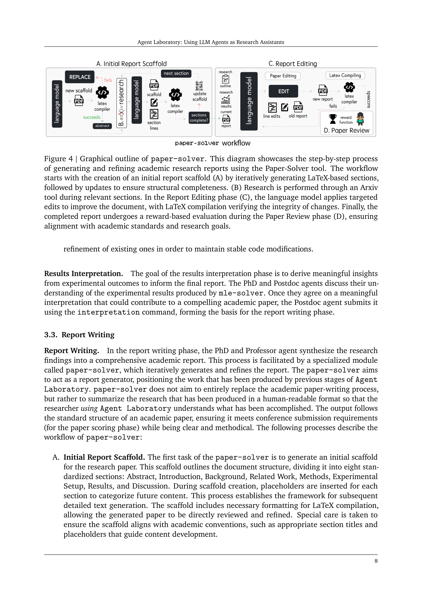
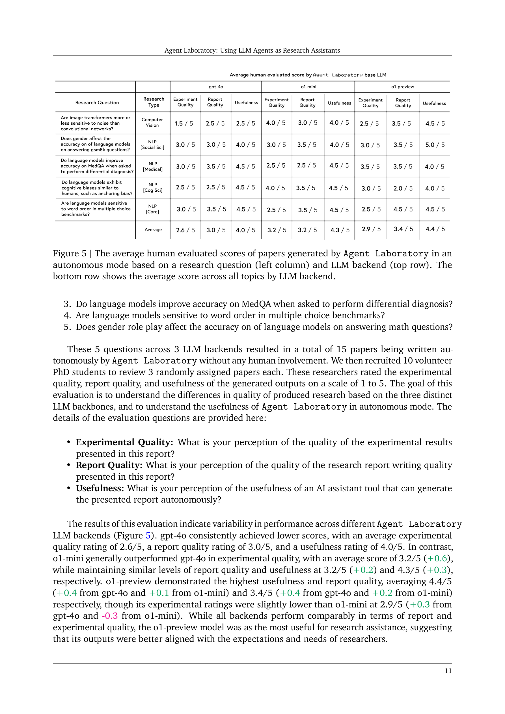

Figure 1
Figure 1
LLM 에이전트를 활용하여 연구의 전 과정(문헌 조사 -> 실험 -> 보고서 작성)을 자동화하는 프레임워크 Agent Laboratory를 제안한다. 인간 연구자가 연구 아이디어를 입력하면, PhD/Postdoc/ML Engineer/SW Engineer/Professor 등의 역할을 가진 전문화된 LLM 에이전트들이 파이프라인을 통해 코드 저장소와 연구 보고서를 생성한다. 완전 자율 모드와 인간 피드백을 반영하는 co-pilot 모드를 모두 지원하며, 기존 자율 연구 방법 대비 84% 비용 절감(gpt-4o 기준 논문당 $2.33)을 달성한다.

Figure 2
과학자들은 시간과 자원의 제약으로 탐구할 수 있는 연구 아이디어의 수가 제한되어, 많은 양질의 아이디어가 미탐구 상태로 남는다. 기존의 자율 연구 시스템(The AI Scientist 등)은 LLM이 독자적으로 아이디어를 생성하고 논문을 작성하는 방식으로, 인간 연구자의 의도와 괴리가 발생하고 비용이 높다. Agent Laboratory는 인간의 창의적 아이디어를 출발점으로 삼아 LLM이 저수준 코딩과 작성을 보조하는 "보완적(complementary)" 역할에 초점을 맞춘다.

Figure 3

Figure 4

Figure 5
Agent Laboratory는 LLM 에이전트를 연구 보조 도구로 활용하는 실용적이고 체계적인 프레임워크이다. 인간의 연구 아이디어를 출발점으로 삼아 저수준 구현을 자동화한다는 설계 철학이 현실적이며, gpt-4o 기준 논문당 $2.33의 비용 효율성은 주목할 만하다. mle-solver의 MLE-Bench 성능은 자동 ML 코드 생성의 가능성을 보여준다. 그러나 NeurIPS 스타일 인간 평가 점수가 3.5-4.4/10 수준에 머무르고, 할루시네이션 문제가 해결되지 않은 점은 실질적 연구 도구로서의 성숙도가 아직 부족함을 시사한다. 자동 리뷰어와 인간 리뷰어 간의 괴리를 실증적으로 밝힌 것은 커뮤니티에 유용한 기여이다. ML 이외의 과학 분야로의 확장과 할루시네이션 감지/방지 메커니즘 강화가 향후 핵심 과제이다.